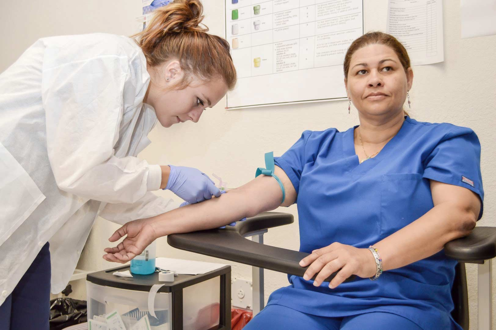

Elsie Tape
Executive Assistant with 4+ years of experience navigating matrixed organizations, driving organizational infrastructure, providing high-level administrative support and acting as an escalation point of contact for issues between multiple executives, prospective clients, and other partners to effectively promote growth and scalability.
Implement compliance with state and federal accreditation policies and regulations to support long-range plans, projects, strategic goals, decision-making, budgeting and finances of the CEO consistent with the highest ethical standards. Given that the style of coordination, communication, and management implemented within a department has a direct impact on the success of business goals, you need a candidate who has experience streamlining the process development of business initiatives to produce more progress. I can deliver the highest quality of customer service and support to C-suite executives in all departmental projects and program support services.
I possess a proven ability to increase operational efficiency by monitoring metrics for continual process improvement. Additionally, I’m highly skilled at utilizing escalation paths and updating executive stakeholders on performance of ongoing initiatives, to ensure the coordination of work efforts across internal and external partners against program requirements and overall business goals.
Experience
Digital Content
• Developed digital and print collateral for VASCO
• Event Coordinator at New Student Orientation
• Experience with HTML, CSS, TikTok, Photoshop
Executive Assistant
• Responsible for cordinatoing new student enrollment
• Oversee all aspects of curriculum revision, office administration, budegting and financing, and communication efforts
Sales Lead
• Established brand loyalty through relatinship management
• Streamlined customer loyalty by creating engaging marketing campaigns
• Created KPI's to determine sales goals and progress
• Managed inventory and shipping discrepancies
Education
UC Riverside
University of California Riverside
University of California Riverside
Portfolio
